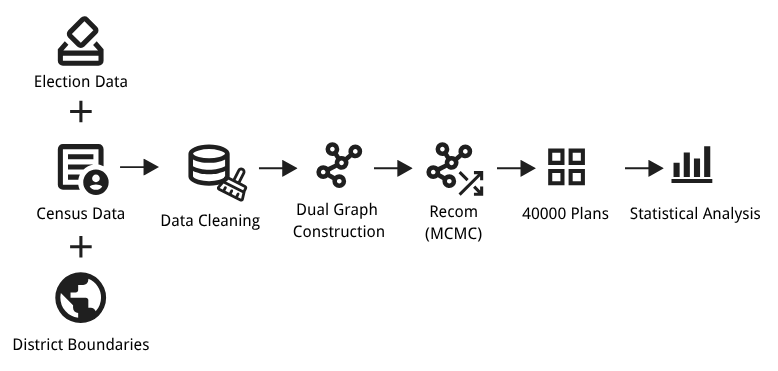
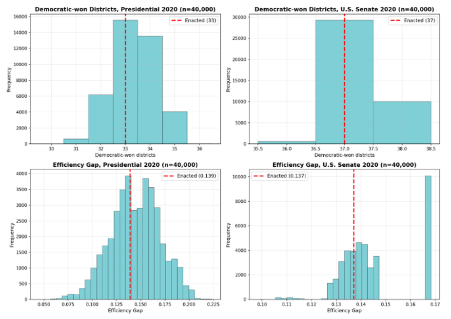
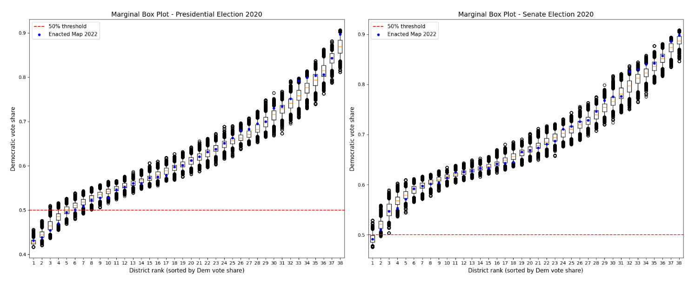
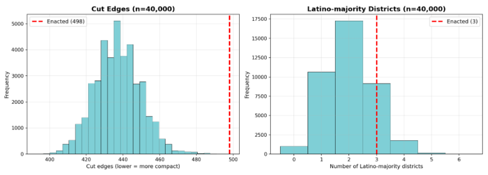
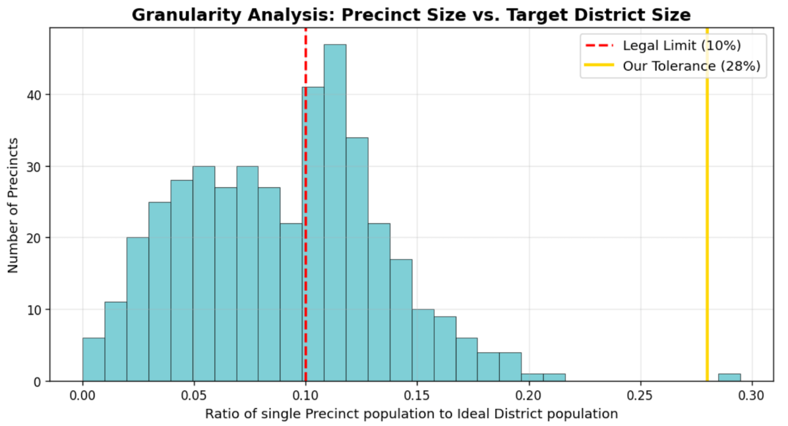
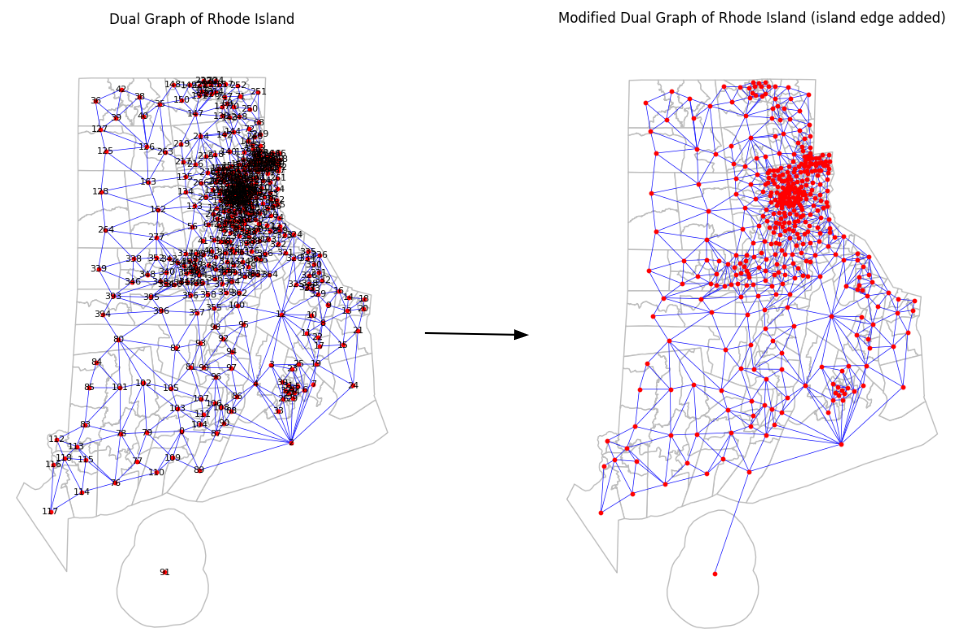

This project investigates the fairness of Rhode Island's 2022 State Senate districts through computational redistricting analysis. Using GerryChain, we generated over 40,000 alternative districting plans with the ReCom Markov Chain Monte Carlo (MCMC) algorithm and compared them against the enacted map to evaluate partisan fairness, compactness, and minority representation.

We combined census, election, and district boundary data to construct a dual graph representation of Rhode Island. The ReCom algorithm was then used to generate 40,000 neutral districting plans, allowing statistical comparison between the enacted map and the simulated ensemble.
The enacted 2022 Senate map lies near the center of the simulated ensemble, indicating that its partisan outcome is statistically representative rather than an outlier.

Across districts, the enacted map exhibits a strong Democratic baseline across the vast majority of districts. The enacted plan aligns closely with the ensemble median in terms of statistical performance, and no districts appear as outliers relative to the simulated distribution, indicating that outcomes remain within high-density regions of the ensemble.

Although the enacted map is less compact than the average neutral plan, it preserves more Latino-majority districts than most simulated alternatives, illustrating the trade-off between geometric compactness and community representation.

Unlike many U.S. states, Rhode Island permits a relatively large population deviation between districts. We adjusted GerryChain's population tolerance parameter to satisfy the state's legal requirements while ensuring all generated plans remained valid throughout the simulation.

Several Rhode Island precincts are located on islands and are not physically connected to the mainland, resulting in disconnected graph components. To enable ReCom operations, we manually added adjacency edges between these precincts and their corresponding mainland districts while preserving the intended administrative relationships.

Overall, the analysis suggests that Rhode Island’s 2022 State Senate map is not a partisan outlier, as its outcomes closely align with the distribution of simulated redistricting plans. However, the map exhibits lower compactness compared to neutral ensembles, reflecting a trade-off between geometric efficiency and representation goals. Additionally, it preserves a relatively higher number of Latino-majority districts, indicating improved minority representation relative to most algorithmically generated alternatives.